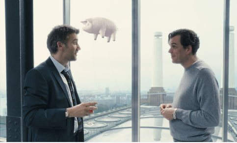
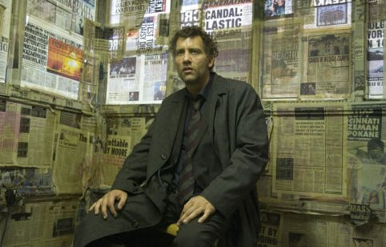

Children of Men
 ]
]
Director: Alfonso Cuarón. Writer: Alfonso Cuarón, et al. Starring: Clive Owen, Michael Caine, Julianne Moore. 2006. Based on a novel by P.D. James.
 No children. No future. No hope.
No children. No future. No hope.
 ]
]
A dystopian near-future Britain depicted with a realism that is both heartbreaking and horrifying, and directed with a relentless yet unobtrusive kinematic intensity. The human race has been infertile for the last eighteen years. Society has lost all hope for the future, and is tearing itself apart. The island of Great Britain presents a last, desperate bastion of civilisation, turning fascist in a failing effort to retain control. Militarised police line London's grimy streets, while animated Orwellian public information displays warn that it is a criminal offence to aid the flood of illegal refugees arriving from mainland Europe.
]
The cast are incredible all round, particularly Clive Owen's tired and reluctant hero, a powerfully understated performance that captivates for every second of the movie. Michael Caine's aging hippy, which he based on John Lennon, is an absolute scene-stealing delight.

But it's the cinematography that is the real star, gripping and compelling throughout, every scene lent a terrible beauty. Several minutes-long handheld camera shots demonstrate fearsome logistical preparations behind the camera, providing some battle scenes that are as intense, immersive and terrifying as those from Saving Private Ryan, without needing the gore.
Rating: 9/10. A stunning film, compelling and emotionally harrowing, only falling short of a magic '10' by virtue of lacking a real life-changing message.